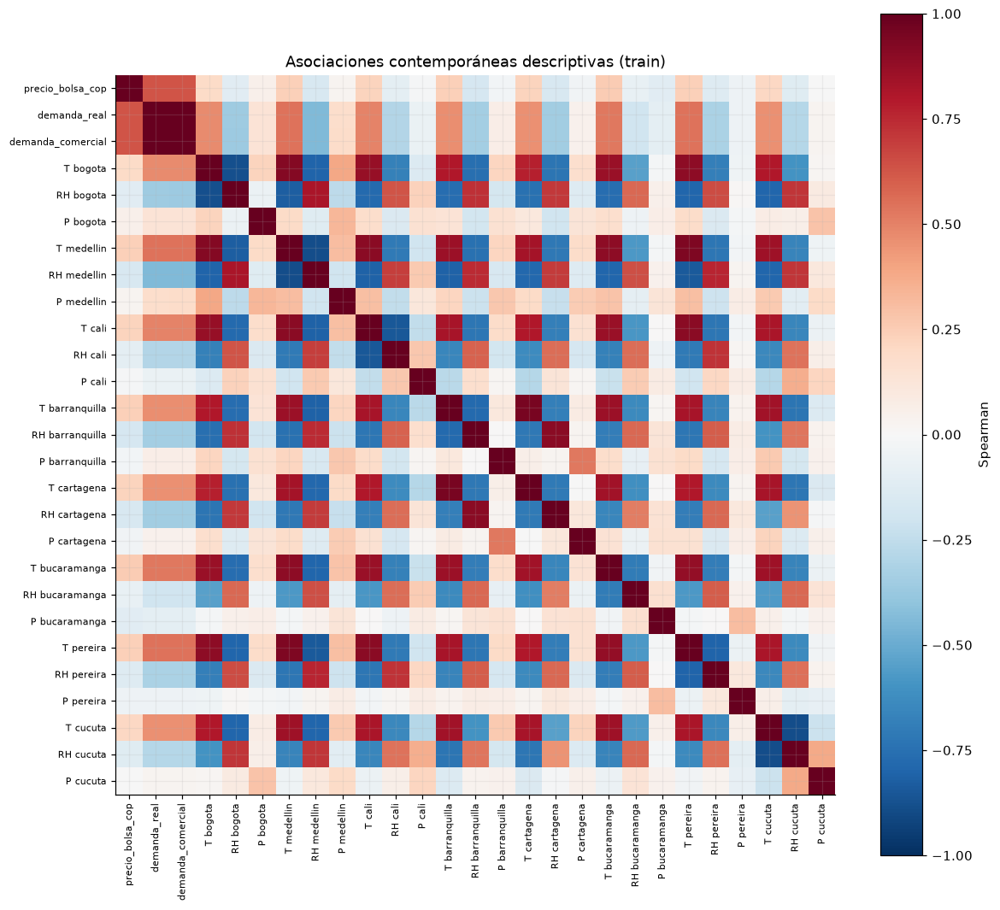
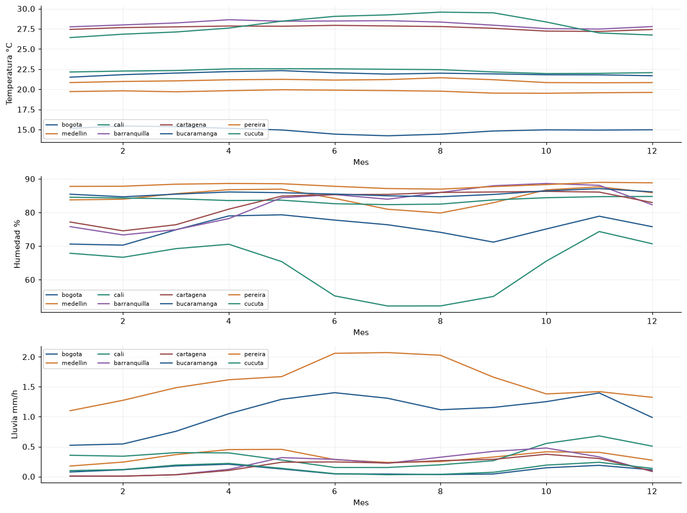

6. Demanda, clima e hidrología#
Se estiman asociaciones contemporáneas, asociaciones con covariables rezagadas 24 horas y acumulados hidrológicos retrospectivos. La información mutua se calcula sobre una muestra determinista de entrenamiento. Estas medidas describen dependencias estadísticas y orientan la representación multivariada.
Las ocho ciudades se conservan por separado para representar la heterogeneidad meteorológica. El objetivo de pronóstico es una serie nacional. La precipitación urbana caracteriza las ubicaciones seleccionadas; representar la oferta hidroeléctrica mediante lluvia requiere observaciones adicionales en las cuencas aportantes.
eda.covariates()

| precio_bolsa_cop_kwh | |
|---|---|
| relative_humidity_2m_pct_barranquilla | -0.16484 |
| relative_humidity_2m_pct_cartagena | -0.1604 |
| relative_humidity_2m_pct_medellin | -0.15985 |
| relative_humidity_2m_pct_pereira | -0.12652 |
| relative_humidity_2m_pct_cucuta | -0.12198 |
| relative_humidity_2m_pct_bogota | -0.11151 |
| precipitation_preceding_hour_mm_bucaramanga | -0.11003 |
| relative_humidity_2m_pct_cali | -0.099551 |
| relative_humidity_2m_pct_bucaramanga | -0.070865 |
| precipitation_preceding_hour_mm_pereira | -0.047244 |
| precipitation_preceding_hour_mm_cartagena | -0.038106 |
| precipitation_preceding_hour_mm_barranquilla | -0.030186 |
| precipitation_preceding_hour_mm_cali | -0.0086095 |
| precipitation_preceding_hour_mm_cucuta | -0.0062685 |
| precipitation_preceding_hour_mm_medellin | 0.026864 |
| precipitation_preceding_hour_mm_bogota | 0.054335 |
| temperature_2m_c_bogota | 0.18994 |
| temperature_2m_c_cucuta | 0.2094 |
| temperature_2m_c_cali | 0.22104 |
| temperature_2m_c_cartagena | 0.22422 |
| temperature_2m_c_medellin | 0.23578 |
| temperature_2m_c_pereira | 0.23798 |
| temperature_2m_c_barranquilla | 0.23966 |
| temperature_2m_c_bucaramanga | 0.25754 |
| demanda_comercial_kwh | 0.6254 |
| demanda_real_kwh | 0.62889 |
| precio_bolsa_cop_kwh | 1 |
| spearman_rezago_24h | informacion_mutua_muestra_train | |
|---|---|---|
| relative_humidity_2m_pct_barranquilla | -0.16752 | 0.041177 |
| relative_humidity_2m_pct_medellin | -0.16461 | 0.034723 |
| relative_humidity_2m_pct_cartagena | -0.16291 | 0.047077 |
| relative_humidity_2m_pct_pereira | -0.12976 | 0.02586 |
| relative_humidity_2m_pct_cucuta | -0.12824 | 0.039703 |
| relative_humidity_2m_pct_bogota | -0.11723 | 0.037738 |
| precipitation_preceding_hour_mm_bucaramanga | -0.11564 | 0.016464 |
| relative_humidity_2m_pct_cali | -0.10089 | 0.011836 |
| relative_humidity_2m_pct_bucaramanga | -0.077291 | 0.0091161 |
| precipitation_preceding_hour_mm_pereira | -0.048003 | 0.021154 |
| precipitation_preceding_hour_mm_cartagena | -0.043803 | 0.01869 |
| precipitation_preceding_hour_mm_barranquilla | -0.036532 | 0.022058 |
| precipitation_preceding_hour_mm_cali | -0.015062 | 0.026163 |
| precipitation_preceding_hour_mm_cucuta | -0.012664 | 0.015168 |
| precipitation_preceding_hour_mm_medellin | 0.016097 | 0.018914 |
| precipitation_preceding_hour_mm_bogota | 0.046482 | 0.011949 |
| temperature_2m_c_bogota | 0.18993 | 0.047489 |
| temperature_2m_c_cucuta | 0.21227 | 0.051813 |
| temperature_2m_c_cali | 0.22279 | 0.051701 |
| temperature_2m_c_cartagena | 0.22948 | 0.046838 |
| temperature_2m_c_medellin | 0.23747 | 0.055688 |
| temperature_2m_c_pereira | 0.23933 | 0.057904 |
| temperature_2m_c_barranquilla | 0.2443 | 0.057263 |
| temperature_2m_c_bucaramanga | 0.26021 | 0.057481 |
| demanda_comercial_kwh | 0.60836 | 0.28121 |
| demanda_real_kwh | 0.61189 | 0.27918 |
| VIF_aproximado | |
|---|---|
| demanda_real_kwh | 863.61 |
| demanda_comercial_kwh | 861.22 |
| temperature_2m_c_barranquilla | 10.665 |
| temperature_2m_c_cartagena | 8.6616 |
| relative_humidity_2m_pct_barranquilla | 6.348 |
| temperature_2m_c_cucuta | 4.5652 |
| relative_humidity_2m_pct_cartagena | 4.4872 |
| temperature_2m_c_cali | 4.3426 |
| relative_humidity_2m_pct_cucuta | 3.9774 |
| temperature_2m_c_bucaramanga | 3.4348 |
| temperature_2m_c_pereira | 3.3791 |
| temperature_2m_c_medellin | 3.2665 |
| relative_humidity_2m_pct_cali | 2.7318 |
| temperature_2m_c_bogota | 2.292 |
| relative_humidity_2m_pct_bucaramanga | 2.1693 |
| relative_humidity_2m_pct_pereira | 1.8432 |
| relative_humidity_2m_pct_medellin | 1.7419 |
| relative_humidity_2m_pct_bogota | 1.4973 |
| precipitation_preceding_hour_mm_cartagena | 1.4803 |
| precipitation_preceding_hour_mm_bucaramanga | 1.3575 |
| precipitation_preceding_hour_mm_barranquilla | 1.2972 |
| precipitation_preceding_hour_mm_pereira | 1.164 |
| precipitation_preceding_hour_mm_bogota | 1.1332 |
| precipitation_preceding_hour_mm_medellin | 1.1103 |
| precipitation_preceding_hour_mm_cucuta | 1.0972 |
| precipitation_preceding_hour_mm_cali | 1.0487 |
Número de condición de la matriz estandarizada diaria de covariables: 189.1. El VIF usa pseudoinversa si hay singularidad; se interpreta junto al número de condición, no como identificación causal.
| precio_diario | reserva_rezago_1d | aportes_acumulados_7d_pasados | cambio_reserva_7d_pasado | |
|---|---|---|---|---|
| precio_diario | 1 | -0.25455 | -0.13292 | -0.23034 |
| reserva_rezago_1d | -0.25455 | 1 | 0.31059 | 0.084981 |
| aportes_acumulados_7d_pasados | -0.13292 | 0.31059 | 1 | 0.82355 |
| cambio_reserva_7d_pasado | -0.23034 | 0.084981 | 0.82355 | 1 |
| media | sd | p01 | p99 | |
|---|---|---|---|---|
| variable | ||||
| temperature_2m_c_bogota | 14.903 | 3.4963 | 9.1 | 22.7 |
| relative_humidity_2m_pct_bogota | 75.278 | 19.113 | 31 | 100 |
| precipitation_preceding_hour_mm_bogota | 0.1093 | 0.38829 | 0 | 1.7 |
| temperature_2m_c_medellin | 21.057 | 3.5071 | 15.7 | 29.1 |
| relative_humidity_2m_pct_medellin | 84.593 | 15.322 | 43 | 100 |
| precipitation_preceding_hour_mm_medellin | 0.32341 | 0.72186 | 0 | 3.5 |
| temperature_2m_c_cali | 22.283 | 2.8215 | 17.5 | 28.6 |
| relative_humidity_2m_pct_cali | 83.762 | 9.4969 | 59 | 98 |
| precipitation_preceding_hour_mm_cali | 0.35617 | 0.94759 | 0 | 4.6 |
| temperature_2m_c_barranquilla | 28.089 | 2.3497 | 24.2 | 33.8 |
| relative_humidity_2m_pct_barranquilla | 82.437 | 12.399 | 49 | 99 |
| precipitation_preceding_hour_mm_barranquilla | 0.2198 | 0.75527 | 0 | 3.8 |
| temperature_2m_c_cartagena | 27.618 | 1.6948 | 24.7 | 32 |
| relative_humidity_2m_pct_cartagena | 82.704 | 8.7719 | 55 | 94 |
| precipitation_preceding_hour_mm_cartagena | 0.1824 | 0.54102 | 0 | 2.6 |
| temperature_2m_c_bucaramanga | 21.911 | 2.173 | 17.7 | 26.7 |
| relative_humidity_2m_pct_bucaramanga | 85.644 | 6.6481 | 67 | 98 |
| precipitation_preceding_hour_mm_bucaramanga | 1.0672 | 1.7749 | 0 | 9.6 |
| temperature_2m_c_pereira | 19.723 | 2.7564 | 14.8 | 26 |
| relative_humidity_2m_pct_pereira | 88.068 | 9.2601 | 61 | 100 |
| precipitation_preceding_hour_mm_pereira | 1.5922 | 1.4847 | 0 | 6.5 |
| temperature_2m_c_cucuta | 27.987 | 4.1708 | 21.1 | 37.6 |
| relative_humidity_2m_pct_cucuta | 63.706 | 20.013 | 23 | 96 |
| precipitation_preceding_hour_mm_cucuta | 0.12678 | 0.55801 | 0 | 1.9 |

Implicaciones del análisis
Preprocesamiento: Conservar las ocho ciudades. Acumulados y cambios sólo hacia atrás; estandarización/selección sólo con train.
Arquitectura: Bloques numéricos de demanda, clima e hidrología y fusión aprendida; regularizar ante covariables redundantes.
Validación: Asociaciones contemporáneas y con rezago son EDA retrospectivo, no evidencia de información conocida ni ganancia fuera de muestra.
Riesgos: Demanda realizada del horizonte y clima futuro realizado producirían fuga. Un día de rezago hidrológico es ilustración, no un rezago de publicación certificado. Lluvia urbana no reemplaza lluvia de cuencas aportantes; esta última no está descargada.